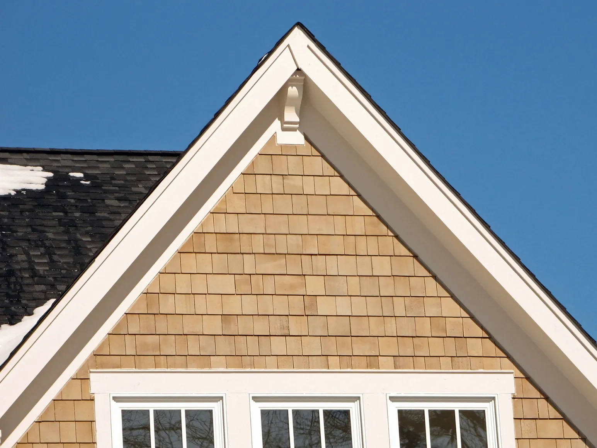

Your home’s exterior should protect it as well as it looks. Copper siding does both: an elegant finish that ages gracefully, and a tough skin against the weather.
Why choose copper siding in Lehi
Copper suits modern and traditional homes alike. It’s the kind of exterior that turns a house into the one people slow down to look at.
- Curb appeal. A copper exterior makes any home stand out.
- Property value. Copper’s look and long life help a home stand out to buyers.
- Low upkeep. Occasional cleaning keeps it bright, and as it weathers it needs even less.
- Protection. Copper resists corrosion and moisture, and it doesn’t burn.
Our copper siding services
Custom installation
Our team installs every copper panel for durability and appearance, and helps you pick the finish that suits your home.
Design options
Choose from sleek modern panels to traditional designs. Prefer the shine of new copper, or the patinated look? We’ll build either.
Repair and replacement
If your copper siding is damaged, we repair or replace it to restore both its looks and its protection.
Expert consultation
Not sure copper siding is right for you? We’ll look at your home, talk through what you like, and help you choose copper siding that fits your budget.


Copper isn’t the only option: the gable above was finished in shake-style siding, and our newest work includes red and black metal siding on a barn.
Why Lehi homeowners choose Custom Roofing
Our team has years of experience installing, repairing and maintaining copper siding. Every project is personal, from choosing the design to the last panel, and we use high-quality copper that protects your home for decades.
Schedule a free consultation
Call 801-889-4220 to talk about copper siding for your Lehi home. We’ll guide you from choosing a style to the finished installation.